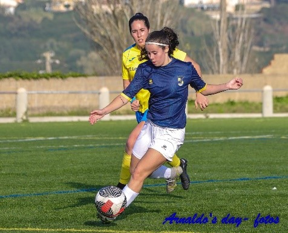
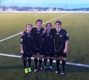
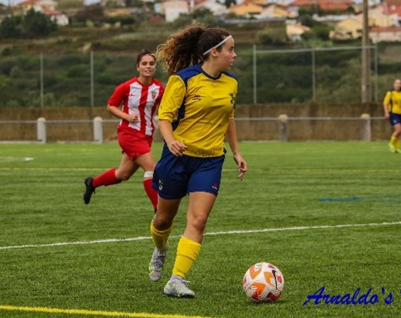

O Meu Percurso Desportivo
O Desporto como já percebeste é algo que adoro e que me acompanhou desde muito cedo, razão pela qual ingressei na Faculdade de Motricidade Humana para, profissionalmente, seguir algo relacionado com esse mundo.
A modalidade que sempre me fascinou e que pratico desde os 12 anos de idade é o futebol, tendo passado pela seleção distrital de Lisboa sub15. Atualmente jogo no Sport União Sintrense, no escalão de Seniores. A minha posição é médio, tendo preferência para jogar a 8 ou a 10.
Para perceberes um bocadinho como foi vê as fotografias.
Clica no link para acederes à minha ficha de jogador na FPF.


